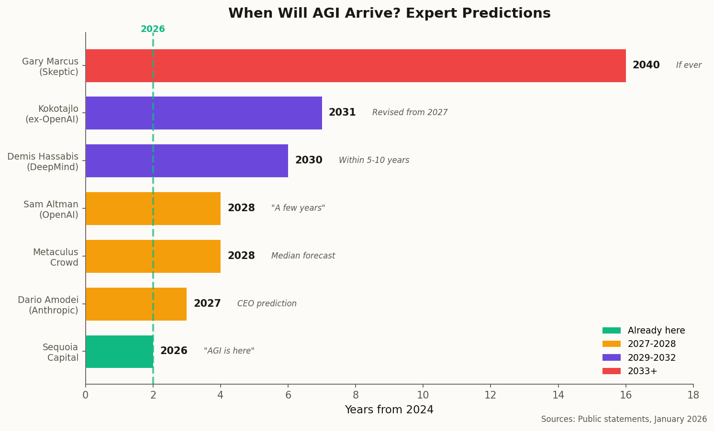
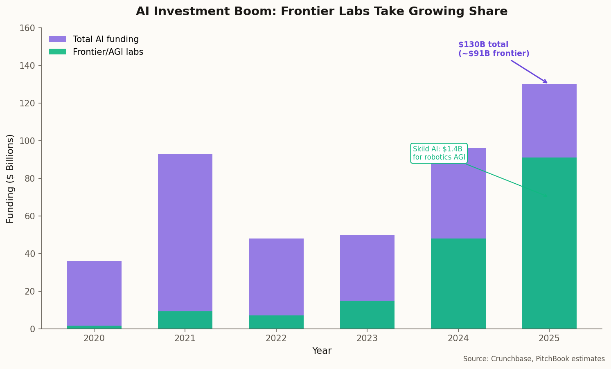

01
Sequoia Declares Victory
On January 14, 2026, venture capital powerhouse Sequoia Capital published a report with a provocative title: "2026: This Is AGI."
Their argument: stop waiting for some mythical moment of machine consciousness. For all practical purposes, AGI is already here. The evidence? Coding agents that autonomously write and debug software. Long-horizon agents capable of multi-step task completion without human intervention. Systems that can reason, plan, and execute across domains.
The Sequoia thesis: "Functionally, AGI is present. 2026 will be a pivotal year for these advancements to become mainstream."
This isn't philosophical musing from an academic—it's a major investor declaring that the technology they've been betting billions on has arrived. The framing matters: Sequoia is shifting the AGI conversation from "if and when" to "how fast can enterprises adopt it."
Not everyone agrees.
02
The Insider's Retreat
Daniel Kokotajlo was an OpenAI researcher who left the company in 2024, citing concerns about its approach to AI safety. He'd previously predicted that AI systems would be capable of "fully autonomous coding"—a key AGI milestone—by 2027.
This month, he revised that estimate. The new timeline: early 2030s.
"The jagged and sometimes unpredictable nature of AI progress" makes forecasting difficult. Capabilities don't advance uniformly—systems excel at some tasks while failing embarrassingly at others.
— Daniel Kokotajlo, former OpenAI researcher
Kokotajlo's revision is significant because it comes from someone who was inside one of the leading AGI labs and who has generally been bullish on AI capabilities. When insiders start pushing back timelines, it's worth paying attention.

Expert AGI predictions span from "already here" to 2040+
The range of predictions is staggering: Sequoia says 2026, Anthropic CEO Dario Amodei says 2027, Sam Altman says "a few years," Demis Hassabis says 5-10 years, Kokotajlo now says early 2030s, and skeptics like Gary Marcus say we may never get there with current approaches.
03
The Hype Hangover
Meanwhile, a growing chorus is declaring the AGI hype cycle officially over.
"The obsession with AGI is fading," notes one analysis from early January. "The AI conversation is becoming less dramatic, more grounded." The "Year of the Agent" in 2025 largely failed to deliver on promises of autonomous agents transforming the workforce. The gap between demos and deployable products remains wide.
The new paradigm: From "AI evangelism" to "AI evaluation." Less speculation about superintelligent systems, more focus on real-world utility and measurable ROI.
This doesn't mean AI capabilities aren't advancing—they clearly are. But the conversation is maturing. Enterprise buyers want to see proof that AI can solve specific problems, not promises about future god-like intelligence. The fever has broken; the hard work of deployment begins.
04
The Regulators Move In
While philosophers debate definitions, regulators are writing laws.
As of January 1, 2026, sweeping AI regulations have taken effect in California (S.B. 53), New York (RAISE Act), and Texas (TRAIGA). These laws require developers of "frontier AI models" to:
- Establish and publish AI safety frameworks
- Report safety incidents to regulators
- Provide transparency around risk assessments
- Implement documented testing procedures
This marks a fundamental shift from voluntary frameworks to legally binding requirements. The three most economically significant US states are now telling frontier labs: prove your systems are safe, or face consequences.
The regulations are designed to be technology-neutral—they apply regardless of whether you call your system "AGI," "frontier AI," or "really sophisticated autocomplete." What matters is capability, not labels.
05
The Safety Alarm
David Dalrymple, an AI safety expert at the UK government's Aria agency, issued a stark warning this month: the world "may not have time" to adequately prepare for advanced AI risks.
The acceleration concern: AI systems could automate significant R&D work by late 2026, leading to a rapid and potentially uncontrollable acceleration of AI capabilities. Once AI can improve itself, timelines compress dramatically.
This is the recursive self-improvement scenario that AI safety researchers have worried about for decades. The difference now: it's not a thought experiment. Major labs are actively pursuing AI systems that can do AI research.
Google DeepMind announced this month that it's opening its first fully automated research lab in the UK. The lab will use AI (powered by Gemini) and robotics to autonomously synthesize and test hundreds of new materials per day. Initial focus: superconductors and advanced semiconductors.
When AI can run scientific experiments without human intervention, the pace of discovery—including AI discovery—could accelerate beyond our ability to govern it.
06
The Hardware Push
NVIDIA announced a new suite of "physical AI" models designed for robotics—systems that can perceive, reason, and act in the real world. The new models include Cosmos Reason 2 and Isaac GR00T N1.6, designed for humanoid robots and autonomous machines.
The significance: AGI discussions have historically focused on language and reasoning. But intelligence in the physical world requires different capabilities—real-time sensor fusion, spatial reasoning, motor control, safety constraints. NVIDIA is betting that embodied AI will be the next frontier.
Speaking of bets: Skild AI, a robotics company building a unified foundation model for robots, raised $1.4 billion this month, tripling its valuation to over $14 billion. Investors clearly believe that AGI in physical form is worth funding at unprecedented scale.

Frontier and AGI labs now capture the majority of AI investment
07
The Efficiency Revolution
While headlines focus on ever-larger models, a quieter revolution is underway: smaller, more efficient "reasoning-first" models that match the performance of systems many times their size.
The Technology Innovation Institute (TII) released Falcon-H1R 7B this month—a model that achieves performance comparable to models seven times larger. The key: internal deliberation loops that improve logical consistency and correctness.
This matters for AGI because raw scale may not be the path forward. If smaller models can match larger ones through better architecture and training, then:
- AGI becomes cheaper to develop and deploy
- More players can compete at the frontier
- Local, private AI becomes viable
- The compute bottleneck relaxes
The "scaling hypothesis"—the idea that throwing more compute at models will eventually produce AGI—isn't dead. But the efficiency gains suggest that algorithmic breakthroughs may matter as much as raw compute.
08
What It All Means
Here's the uncomfortable truth about AGI in January 2026: nobody knows what's happening.
Sequoia says AGI is here. Kokotajlo says it's five years away. Skeptics say current architectures will never get there. Regulators are writing laws for systems they can't define. Safety researchers warn we may not have time to prepare. And billions of dollars continue flowing into labs racing to build it.
Perhaps the most honest assessment comes from the observation that "AGI" has always been a moving target. When AI beats humans at chess, that's not AGI. When it beats us at Go, that's not AGI. When it writes code, passes bar exams, and generates photorealistic video—still not AGI. The goalposts keep moving because we keep redefining intelligence to exclude whatever machines can currently do.
"AGI is whatever AI can't do yet."
— Often attributed to Larry Tesler (Tesler's Theorem)
Maybe Sequoia is right and we should stop waiting for a moment that may never feel like "arrival." Or maybe the skeptics are right and we're still missing something fundamental. What's certain is that the systems being built today are more capable than anything we've seen before—and the pace of improvement shows no signs of slowing.
Whether you call that AGI is almost beside the point. What matters is what we do with it.